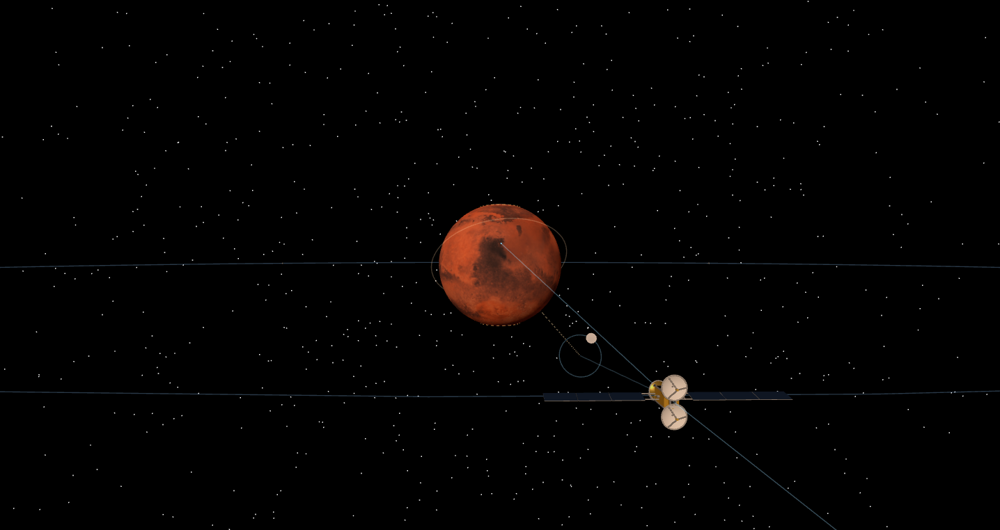

火星通讯链
JEZERO 地面站 ⇄ 静止轨道星座 ⇄ 地球 · 链路预算的每一格都是仿真填的

深空地面站com-station-01
12 m 卡塞格林 · 20 K 低温前端 · 相干双向测轨
天线12 m · Ka 32 GHz 增益 70.5 dBi · 0.05° 铅笔束
🔬 前端LNA 制冷至 20 K → Tsys 75 K · G/T 51.8 dB/K（Friis：第一级丢的信噪比永远补不回）
📐 下行C/N₀ 117 dB-Hz → 600 Mbps 余量 24.7 dB · 满尘暴吃掉 9.5 dB 仍不掉线
📐 上行EIRP 98 dBW（800 W）→ 100 Mbps 余量 45 dB——地面站是大炮
🔬 频标氢钟 Allan 1×10⁻¹⁵ @1000 s——相干测距/多普勒的精度天花板
工程3 m 应急碟上合 2.5 AU 守 500 bps · LNA 偏置板 rev B Gerber 已出厂

静止轨道中继星com-relay-01
17,032 km 定点 · 3 主 + 1 备 · 全城仿真最深的资产
星座±71° 连续覆盖 · 干重 1265 kg · 4 星 5.4 t 一发入轨
📐 HFSS 全波Ø3 m Ka 增益 58.2 dBi · 波束 0.226° · S11 −26.6 dB
📐 Geant42×10⁵ 质子蒙卡 → 4 mm 铝 15 年仅 7.1 krad（无俘获带，比地球 GEO 温和 ~10×）
📐 COMSOL太阳翼每轨 −25→−152 °C（127 °C ×1350 次）· 热弹判死铝碗 → CFRP 反射面
📐 位保DOP853 轨道积分：Jezero 槽位 5.1 m/s/yr，15 年 109 m/s——选对经度省 5× 推进剂
📐 任务级780 天会合仿真：每周期交付 65 Tb · 日凌全断 14.4 天自然涌现 · LDPC 蒙卡距香农 1.8 dB